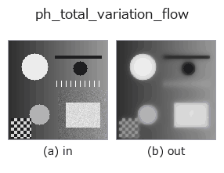

physics op• 数据种类:image → image
• 调用:fullseye.apply(img, "ph_total_variation_flow", a=0.5, b=0.5)(2-D 的模型是一张图 + 两个标量旋钮 a,b∈[0,1])
• GPU:有(许可列表中的机械式 GPU 路径,CuPy)。device="auto" 在实测尺寸(4,194,304 像素)及以上选择 GPU

*图为在 128×128 合成输入上实际运行的输出。左为输入，右为输出。点云以俯视散点显示(亮度 = z)，一维序列为折线，体数据为沿 z 的最大值投影，视频为中间帧，复数图像为幅值；无法成像的返回值直接显示数值。*
*输出以类 viridis 伪彩色显示(深紫 = 小，黄 = 大)，便于读取距离、相位、方向、深度这类“量的场”。*
扫描旋钮 a(0.1 / 0.5 / 0.9，另一旋钮取默认):
▸ ph_total_variation_flow: 旋钮 a 扫描 (文档网站)
扫描旋钮 b(0.1 / 0.5 / 0.9，另一旋钮取默认):
▸ ph_total_variation_flow: 旋钮 b 扫描 (文档网站)
换别的图像(合成场景 / 照片 / 硬币。上排为输入，下排为对应输出。旋钮取默认):
▸ ph_total_variation_flow: 其他输入图像 (文档网站)
*第 4 列是彩色 (H,W,3) 输入。此算子能正确处理颜色而不跨通道(不把颜色通道当作第三个空间轴卷积)。*
全变分（Rudin-Osher-Fatemi）去噪流（无对应 HALCON 算子，""）。
> 以下的详细说明为原文 —— 摘要与标题已翻译。
Gradient descent of the ROF energy TV(I) + (lam/2)||I - I0||^2:
I_t = div(grad I / |grad I|) - lam (I - I0).
The TV term (curvature of the level sets) flattens noise while preserving sharp edges; the fidelity term keeps the result anchored to the noisy input I0 so it denoises rather than collapsing to a constant. a sets the step count (1..80 explicit steps of dt=0.008), b the fidelity weight lam in [10, 30] (b=0 smooths most, b=1 stays closest to the input).
The steps march towards the ROF minimiser, a fixed point: once the fidelity has had time to act (lam * steps * dt of a few units, reached by a ~ 0.5 at b=0) more steps no longer change the answer, so raising a never turns a denoiser into a blur. A flat region of perimeter P and area A loses about (P/A)/lam of its contrast at the fixed point, so small features fade more than large ones (the usual ROF bias); raise b for light noise.
Until 2026-11-05 lam was 0.02..0.22: its time constant 1/lam (4.5..50) was far longer than the whole run (80 * 0.008 = 0.64), so the fidelity did nothing, the op was a pure TV flow drifting to a constant, and the error against the clean image grew with a (noisy square, sigma 0.05: 0.019 at a=0.1, 0.067 at a=1, worse than the noisy input's 0.050; even a clean input lost 0.067).
The curvature term is the mean of the four forward/backward staggerings (forward gradient + backward divergence and its mirror, per axis), so the flow commutes with flipping the image. Until 2026-11-05 (adversarial review round 2) only the forward-gradient / backward-divergence pair was used, and flipping the input changed the result by up to 0.15.
• gallery2d_physics_alife_3d 族使用指南
• 示例数据目录(下载 URL / 许可证) —— 2-D 用 skimage.data(BSD/公有领域)加合成图,3-D 给出真实数据源(Stanford/PDS 等)的下载 URL。
• 算子来历与参考文献 —— 该算子族所依据的研究/方法出处。
• 算法的正典(作者、年份)与用途见上面的族使用指南。
下面的程序已确认可以运行(与图相同的输入)。在 Studio 帮助中，此块会变成按钮，可当场加载并运行。
ph_total_variation_flow 0.50 0.50
• find_ops_by_meaning — py -3.11 examples/find_ops_by_meaning.py
• gallery2d_physics_alife_3d — py -3.11 examples/gallery2d_physics_alife_3d.py
image 作为输入)identity · gaussian · mean_box · mean_box_wh · bilateral · kuwahara · unsharp · median
physics)ph_perona_malik · ph_coherence_enhancing_diffusion · ph_reaction_diffusion · ph_heat_flow · ph_mean_curvature_motion
*Provenance: ops.py — 2D 算子登记表。本条目由 tools/opdocs.py md 自动生成(请勿手工编辑)。*
© 2026 Kazufumi Furuse — Fullseye operator documentation. Licensed under Apache-2.0.